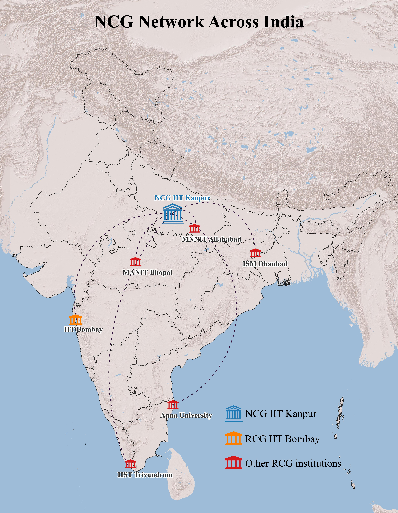

About RCG

The Regional Centre for Geodesy (RCG) at IIT Bombay was established in 2022 as a key hub for advancing geodetic research and capacity building in India with a focus in Western India. It forms part of a nationwide network coordinated by the National Centre for Geodesy (NCG) at IIT Kanpur. Under NCG’s coordination, six RCGs located at IIT Bombay, IIT (ISM) Dhanbad, IIST Trivandrum, MANIT Bhopal, MNNIT Allahabad, and Anna University Chennai, work in close collaboration with each other and with national agencies such as the Survey of India and ISRO. Together, this network aims to strengthen geodetic capacity across the country through specialized training, development of academic resources, and cutting-edge research, while supporting a wide range of real-worldapplications.
This initiative is supported by the Department of Science and Technology (DST), Ministry of Science and Technology, Government of India. It was conceived in response to the limited educational opportunities in Geodesy at the national level. While several universities offer courses in Surveying and Mapping, Geoinformatics, and GIS, these programs often lack in-depth coverage of the fundamental and advanced concepts of Geodesy. As a result, there is a recognized need to build human resource capacity in Geodesy and related domains such as SAR interferometry to address the shortage of national expertise in these critical fields.
The Regional Centre for Geodesy at IIT Bombay focuses on applied geodesy to strengthen geospatial capabilities in India with special focus in western India. The centre trains students and professionals in cutting-edge technologies including GNSS (Global Navigation Satellite System), UAVs (Unmanned Aerial Vehicles), space-based geodesy, and imaging geodesy. These tools are employed to address key scientific and societal challenges such as monitoring surface deformation, studying cryospheric processes, and assessing mass changes.
Adopting a multidisciplinary approach, RCG IIT Bombay brings together expertise from civil engineering, earth sciences, and geoinformatics to tackle complex geophysical problems. The centre develops innovative algorithms and tools for processing large geospatial datasets, while also promoting field-based practices that translate academic knowledge into practical solutions. Beyond research, RCG IIT Bombay plays a pivotal role in capacity building by organizing workshops, short courses, and training programs aimed at equipping individuals with advanced geodetic skills. Its broader mission is to support national priorities including disaster management, resource planning, and sustainable development, thereby contributing significantly to the enhancement of India’s geospatial infrastructure.